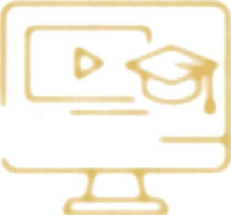
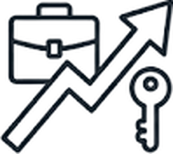

01
01Estructuramos el conocimiento
Manuales, guías académicas y recursos formativos. Diseñamos la arquitectura conceptual y metodológica que permite transformar la mentoría en una disciplina enseñable, evaluable y certificable.
Manuales →Fórmate en nuestra academia con cursos de los mentores más distinguidos de nuestra comunidad.
Contenidos creados por mentores, para mentores

Dr. Nelson de J. Rueda
Director General
Transformamos experiencia en formación profesional en mentoría.
La Academia Global RGM desarrolla, estructura y certifica la mentoría como disciplina profesional.
Acompañamos a personas, universidades y organizaciones en la creación e implementación de programas de mentoría con método, estándares internacionales y visión transformadora.
Diseñamos programas académicos listos para aplicar, certificamos mentores y apoyamos a las instituciones en la integración de la mentoría a sus modelos de formación.
El mundo cambió, y la formación humana y profesional está llamada a evolucionar con él. Las universidades aportan conocimiento. Las organizaciones impulsan el desarrollo de habilidades. Las personas construyen experiencia a lo largo de su vida.
En este nuevo contexto, la mentoría se vuelve esencial: un puente entre conocimiento, experiencia y transformación consciente.
La mentoría transforma la experiencia en criterio, la conciencia en mejores decisiones y el recorrido personal en valor para otros. Es una disciplina de acompañamiento que permite orientar procesos de desarrollo en momentos clave de la vida profesional y humana.
La Academia Global RGM estructura, enseña y certifica esta disciplina, formando mentores con presencia, método y responsabilidad.
Las funciones de la Academia, con acceso directo a cada sección.
01Manuales, guías académicas y recursos formativos. Diseñamos la arquitectura conceptual y metodológica que permite transformar la mentoría en una disciplina enseñable, evaluable y certificable.
Manuales → 02
02Programas académicos adaptables, con arquitectura académica, metodología y criterios de evaluación, listos para ser implementados por universidades, organizaciones y centros de formación.
Programas → 03
03Aval institucional y criterios de calidad que aseguran coherencia conceptual, rigor académico y estándares internacionales.
Avales → 04
04Certificamos mentores validando su experiencia, criterio y capacidad real para acompañar procesos de transformación.
Certificaciones → 05
05Una red de centros autorizados para implementar programas de mentoría con metodología RGM, estándares académicos y acompañamiento institucional.
Centros de formación →
06Una plataforma digital que integra contenidos académicos, actividades prácticas, evaluación y certificación, para escalar la formación de mentores con calidad y trazabilidad.
Cursos virtuales →
Incorporar mentoría en carreras y posgrados. Crear diplomados y maestrías. Diferenciar su oferta académica.

Convertir experiencia en una profesión. Certificarse como mentor. Desarrollar una propuesta de valor.

Desarrollar líderes con criterio. Implementar programas de mentoría. Mejorar la cultura organizacional.

Crear centros de formación. Escalar conocimiento. Generar impacto y negocio.
La Academia Global RGM reúne una arquitectura académica ya desarrollada para que universidades y organizaciones puedan implementar la mentoría con claridad, respaldo y calidad formativa:
Una base sólida para implementar más rápido, con menor riesgo y mayor calidad.
La Academia Global RGM ha sido diseñada para responder a los estándares de calidad, rigor académico y trazabilidad institucional que exige la educación superior.
Su estructura metodológica, su liderazgo académico y su expansión internacional la convierten en una plataforma sólida para que universidades e instituciones puedan desarrollar programas conjuntos, certificaciones con doble aval, investigación aplicada y extensión universitaria especializada en mentoría.
Su proyección es clara: consolidarse como una referencia internacional en la formación y certificación de Mentores Expertos, conectando ciencia, práctica profesional, tecnología y ética en un modelo de excelencia.
La Academia Global RGM nace de una historia construida en la práctica, se consolida en el presente con programas y certificaciones, y se proyecta internacionalmente como una plataforma para formar mentores capaces de acompañar la transformación humana y profesional.
Desde esta base, impulsa el crecimiento de la Red Global de Mentores, la Rede Global de Mentores y la Global Mentoring Network.